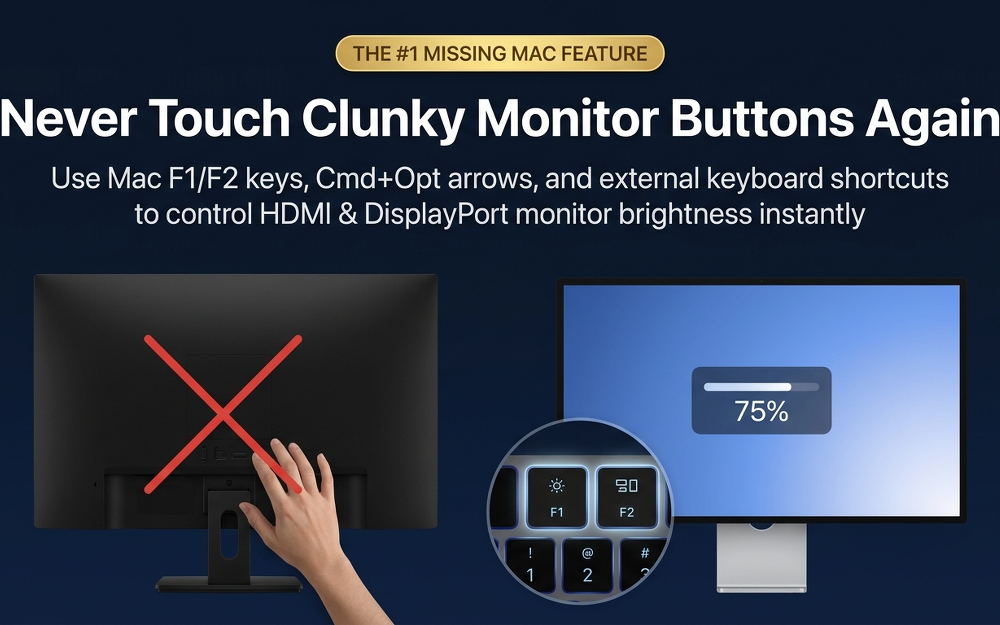
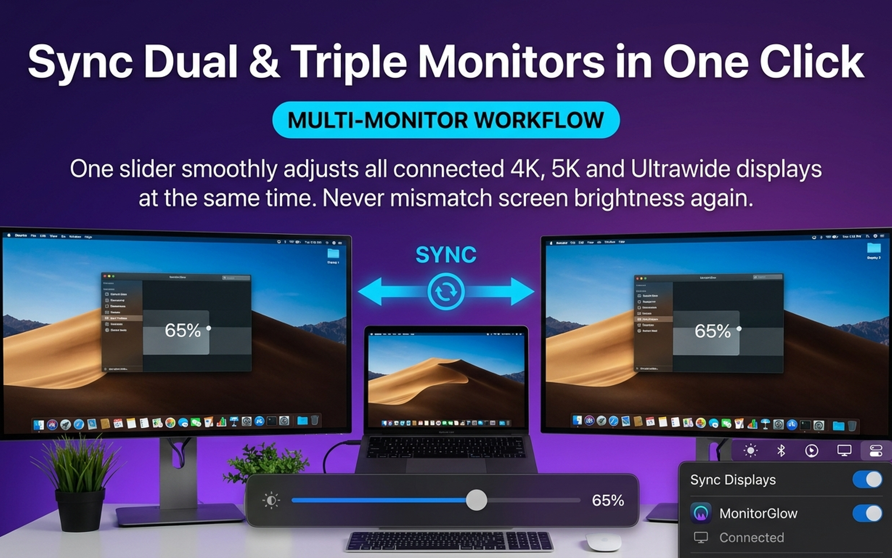
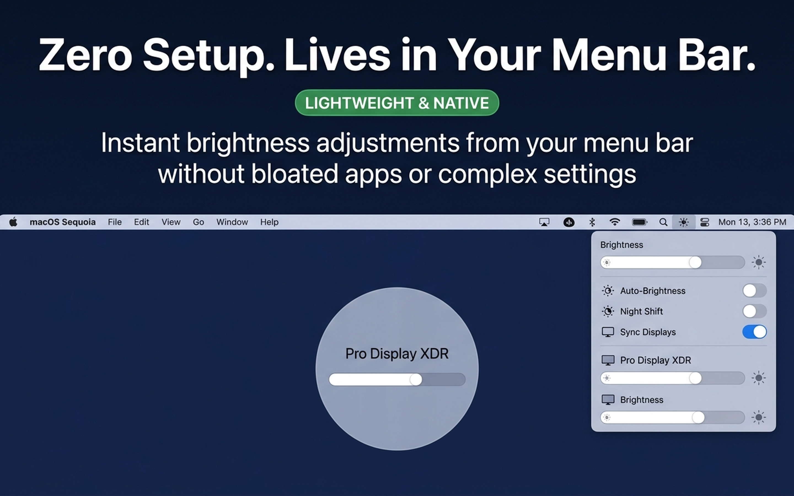
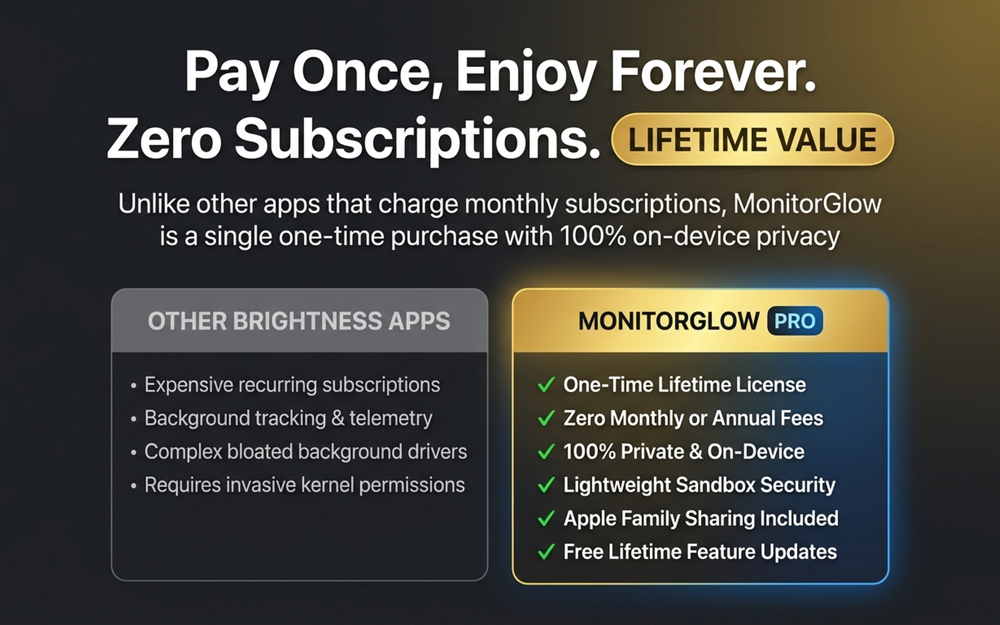

Control External Monitor Brightness with Mac Keys
Seamlessly adjust Dell, LG, Samsung & third-party monitors using standard keyboard shortcuts. Includes Sub-Zero optical night dimming down to 1%.

Engineered for Multi-Monitor Power Users
Zero reaching behind panels. Zero physical buttons. Just pure, effortless brightness control.
Native Mac Keys
Adjust screen levels using ⌥ F1/F2, ⌘ ⌥ ↑/↓, or Ctrl+F1/F2. Works over HDMI, DisplayPort, USB-C, and Thunderbolt docks.
Sub-Zero Optical Night Mode
Most displays bottom out at 30 nits, which blinds your eyes at 1:00 AM. MonitorGlow applies an optical gamma shade to dim down to 1% without hardware PWM flicker.

Liquid Glass Popover & Presets
Instant menu bar access with dynamic Sequoia glass styling. Switch between 100% Day, 75% Work, 50% Relax, and 5% Sub-Zero presets with one click.

Apple-Grade Floating HUD
Visual feedback that feels native to macOS. Floating bezel displays your external monitor name with silky 120Hz smooth animations.

Lifetime Pro License — Zero Subscription Fatigue
Pay once, enjoy forever across all your personal Macs with Apple Family Sharing support included. No recurring monthly fees.

Popular Guides & Hardware Solutions
Step-by-step troubleshooting for Mac mini, Mac Studio, and MacBook external displays:
How to Control Dell Monitor Brightness on Mac →
Fix Apple brightness keys not working on Dell UltraSharp monitors over HDMI & USB-C.
Dim Mac External Displays Below Hardware Limit →
Learn how Sub-Zero optical dimming eliminates late-night glare and eye strain.
Reduce Screen Eye Strain for Software Developers →
Learn how automated 20-20-20 eye rests and workspace lighting protect your vision.